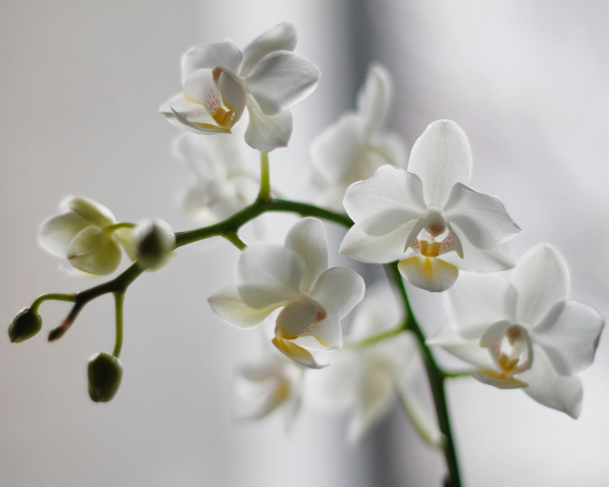
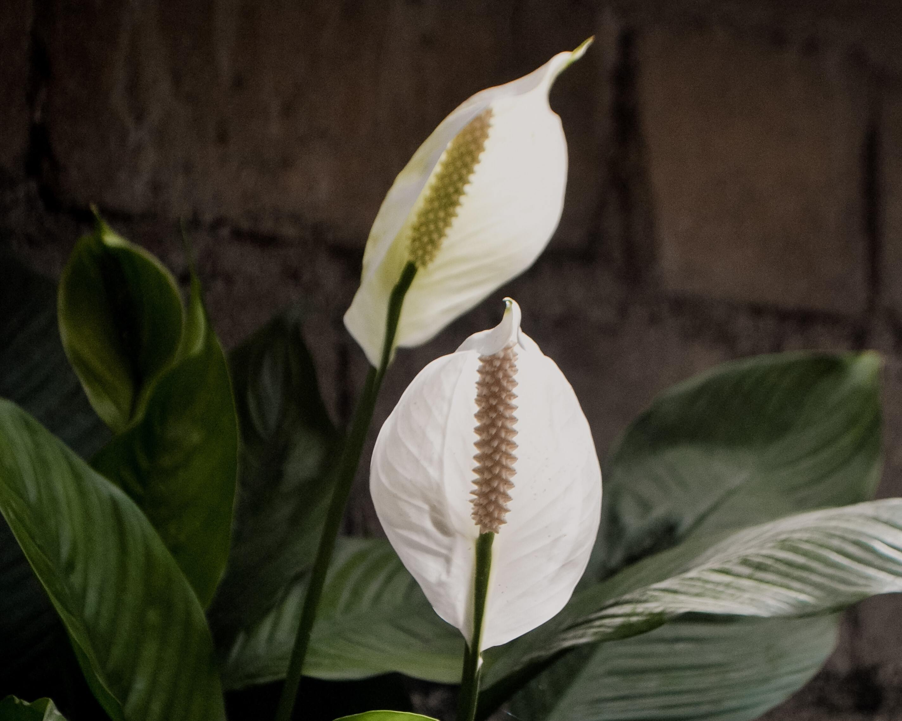

Dicas Gerais
Todas as plantas precisam de sol.
"Ah, mas aqui em casa não bate sol", então experimenta plantas de sombra e deixa elas SEMPRE perto da janela.
"Mas me disseram que lírio da paz não pode pegar sol..." Pois bem, então te mentiram! Brincadeiras a parte,
até mesmo plantas de sombra precisam de pelo menos 2h de sol fraco por dia.
Para saber se está na hora de regar sua plantinha basta colocar o dedo na terra e esfregar um pouco.
Se o dedo sair limpo está na hora de regar, caso contrário, espere mais um pouco.
Dica bônus: procure regar suas plantas pela manhã. Assim você evita a proliferação de fungos.
Se você viu uma praga, não se desespere! O primeiro passo é identificar ela e então agir da maneira adequada.
Para besouros, lagartas e lesmas, você pode caçá-las à noite. Sim! É só remover uma a uma.
Plantas

